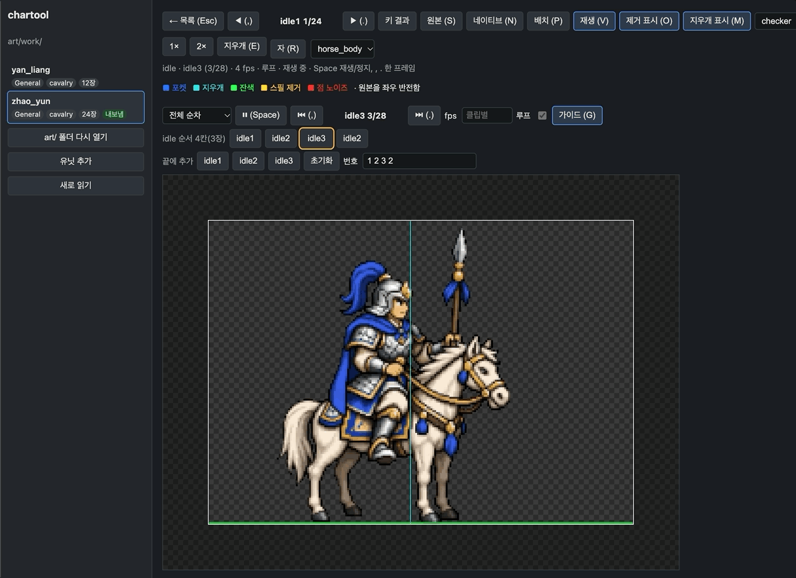
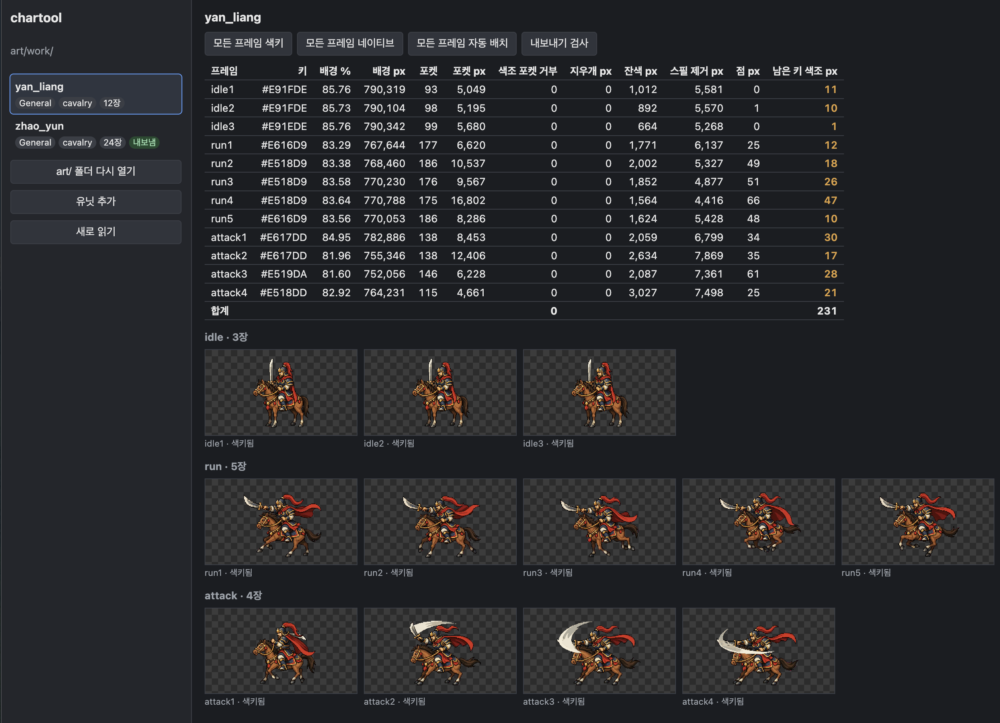

작업 목표
조자룡의 기마 전투 프레임 17장(대기 3 · 달리기 5 · 공격 4 · 피격 2 · 쓰러짐 3)이 1280×720 영상 프레임으로 들어왔다. 게임은 이 그림을 224×160 박스가 한 줄로 이어진 시트로 읽는다. 목표는 두 가지였다. 영상 프레임 특유의 지저분한 배경을 깨끗하게 지우는 것, 그리고 프레임마다 그림을 박스 안 어디에 둘지 눈으로 보면서 정하고 그대로 시트로 내보내는 것이다.
작업 결과
기획부터 병합까지 하루가 걸렸다. 툴은 저장소의 art/ 폴더를 브라우저에서 직접 열어 읽고 쓰며, 결과는 기존 Python 후처리와 픽셀 단위로 같다. 조자룡 기마 시트는 중간에 클립 두 종(명령 · 분노 공격)이 더해져 24장, 7클립으로 완성됐다.


대기, 달리기, 공격, 피격, 쓰러짐에 명령과 분노 공격을 더했다.
마스크, 축소 결과, 시트 조립이 기존 스크립트와 픽셀 단위로 같다.
프레임을 폴더에 넣고 툴에서 내보내면 끝이다. 설정도 바꿀 필요가 없다.
기획 → 조사 → 단계별 구현 → 브라우저 확인 → 병합.
스크립트로는 안 되는 구간이 생겼다
지금까지 유닛 그림은 이미지 생성으로 받아 Python 스크립트로 후처리했다. 단색 마젠타 배경을 지우고, 굵은 도트의 격자 간격을 재서 네이티브 해상도로 줄이고, 손으로 잰 말 몸통 길이로 크기를 맞춘 뒤, 32색으로 줄여 한 줄 시트로 묶는 흐름이다. 영상에서 뽑은 프레임은 이 전제 세 가지가 모두 깨졌다.
배경이 단색이 아니다
영상을 256색으로 거쳐 오면서 마젠타가 여러 색으로 흐트러졌다. 순수한 #FF00FF 픽셀은 한 장에도 없었고, 키 색을 고정하면 장마다 수천 픽셀이 남았다.
외곽선이 번져 있다
인물 가장자리 1~2 픽셀 띠의 90% 이상이 마젠타 색조로 물들어 있었다. 거리 기준만으로는 안 잡히고, 색조로 잡으면 검은 외곽선까지 먹는다.
도트 격자가 없다
압축과 디더링으로 블록 경계가 사라져, 격자 간격을 재서 한 점씩 뽑는 축소를 쓸 수 없었다. 면적 평균으로 줄이고 색을 다시 정리해야 했다.
마젠타를 지우되 외곽선은 남긴다
배경 제거는 원본 해상도에서, 브라우저의 Web Worker 안에서 돌린다. 규칙은 모두 설정값이고, 유닛마다 덮어쓸 수 있다.
키 색은 자동으로 잰다
auto key네 가장자리 픽셀의 중앙값을 키 색으로 쓴다. 평면 마젠타든 흐트러진 마젠타든 파란 배경이든 같은 코드로 처리된다.
가장자리에서 흘러들어 가고, 갇힌 틈은 따로 찾는다
flood · pocket바깥에서 플러드필로 배경을 지운 뒤, 꼬리털 사이나 고삐 안쪽처럼 사방이 막힌 틈은 키 색과의 거리 또는 색조로 찾아 지운다. 색조 기준은 인물의 옷을 지울 수 있어 성분 크기에 상한을 두었다.
번진 테두리는 지우고, 물든 외곽선은 색만 뺀다
fringe · despill배경에 닿은 마젠타 색조 픽셀은 바깥부터 안쪽으로 자라며 제거한다. 단, 어두운 픽셀은 외곽선이므로 지우지 않고 마젠타 성분만 빼서 검정으로 되돌린다. 이 구분이 없으면 외곽선이 1~2 픽셀씩 얇아진다.
남은 건 눈으로 지운다
eraser그래도 남은 점은 프레임 보기에서 클릭 한 번으로 그 자리의 연결된 영역을 지운다. 클릭 좌표는 저장돼 다음에 열어도 같은 결과가 재현된다. 남은 마젠타 픽셀 수는 표에 나와 0인지 바로 확인한다.
자로 재서 줄이고, 32색으로 정리한다
게임의 네이티브 규격은 기마 224×160, 보병 112×160이고 화면에는 2배로 그린다. 모든 유닛이 같은 비율로 보이려면 그림마다 같은 기준으로 줄여야 한다.
자 도구
원본 위에 두 점을 찍어 말 몸통이나 머리 길이를 재면, 등급별 목표 길이(기마는 말 몸통 38픽셀 · 머리 29픽셀, 보병은 머리 15.5픽셀)로 배율이 나온다. 유닛 공통 배율 하나에 프레임별 덮어쓰기를 둔다.
면적 평균 축소
격자가 없는 원본은 분수 배율로 면적 평균을 내서 줄인다. 디더링을 평균 내는 효과가 있어 오히려 깨끗하다. 투명도는 반 이상 덮인 픽셀만 불투명으로 이진화한다.
유닛 공유 32색
모든 프레임의 불투명 픽셀로 팔레트 하나를 만들어 32색으로 줄인다. 디더는 쓰지 않는다. 축소 뒤 남는 1~3픽셀 섬도 이 단계에서 지운다.
몸통 기준으로 놓고, 움직여 보고, 순서를 짠다
배치 보기에서는 박스, 바닥 기준선, 몸통 열이 가이드로 보이고 앞 프레임이 반투명으로 겹친다. 자동 배치가 먼저 놓고, 손으로 드래그하거나 방향키로 1픽셀씩 옮긴다. 되돌리기가 된다.
다리가 아니라 몸통을 고정한다
처음에는 다리의 무게중심을 몸통 열에 맞췄더니 달리기 다섯 장에서 말 몸통이 12픽셀씩 좌우로 출렁였다. 기준을 인물 가운데 띠의 무게중심으로 바꾸자 몸통은 1픽셀 안에서 고정되고 다리만 움직였다. 질주하는 말은 그래야 자연스럽다.
몸통 열은 유닛마다 바꿀 수 있다
박스 안에서 몸이 서는 x 위치다. 쓰러지는 장면을 뒤로 더 밀고 싶을 때 몸통 열을 10픽셀 올리면 모든 프레임이 함께 움직여 쓰러진 말이 박스 안에 들어온다. 이 값은 내보내는 파일에 실려 게임의 피벗이 된다.
잘라도 되는 프레임은 잘라서 낸다
기수가 말 앞에 눕는 쓰러짐 장면은 말발굽을 바닥에 두면 기수 아랫부분이 박스 밖으로 나간다. 박스 밖 픽셀은 빨갛게 표시되고 기본은 내보내기 거부지만, 눈으로 보고 괜찮으면 프레임별로 잘림을 허용한다.
재생과 순서 편집
클립별로 fps와 루프를 두고 재생하거나 한 프레임씩 넘긴다. 순서는 칩으로 편집한다 — 공격을 1 2 1 3 4 3처럼 되돌아가게 하거나 한 장을 여러 칸 머물게 해 강약을 준다. 시트에 셀이 늘지 않고 재생 목록만 길어진다.
검사를 통과해야 내보낸다
내보내기는 셀 격자 시트 한 장과 클립 정의 파일 하나를 쓴다. 클립 정의에는 클립마다 셀 인덱스 순서, fps, 루프 여부와 몸통 열이 들어간다. 게임은 이 파일을 읽어 유닛마다 다른 클립 구성을 그대로 쓴다.
빈 셀 없는 격자
행 수를 먼저 정하고 열 수를 장수에 맞춘다. 24장은 12열 2행이라 18열로 채울 때보다 메모리가 35% 적다.
여섯 가지 확인
시트 크기, 프레임 수, 투명도 0/255, 모든 프레임의 바닥 접지, 박스 밖 잘림, 32색 이하. 하나라도 틀리면 쓰지 않는다.
쓰고 다시 읽어 비교
저장소의 출력 폴더에 쓰고, 쓴 파일을 다시 읽어 바이트가 같은지 확인한다. 덮어쓰기는 묻는다.
있는 클립만 들어간다
명령 · 분노 공격 같은 클립은 파일을 넣은 유닛에만 생긴다. 주인공에게만 연출 클립을 더해도 다른 장수 시트는 그대로다.
만들면서 알게 된 것
기능보다 판단이 어려운 지점이 몇 군데 있었다.
영상 추출 프레임은 재료부터 다르다
256색을 거친 마젠타, 번진 외곽선, 사라진 격자. 다음 장수부터는 영상에서 무손실 PNG로 뽑고 배경색을 실측해 요청문에 적기로 했다. 툴이 흡수할 수 있지만 공급 쪽에서 고치는 게 싸다.
참조 비교가 있으면 깊게 생각할 일이 줄어든다
색키와 축소를 Python 참조와 픽셀 단위로 맞추는 비교 스크립트를 처음부터 두었다. 92장이 전부 같다는 결과가 나오면 코드를 다시 읽을 필요가 없다. 코딩 에이전트의 추론 깊이도 기본값으로 충분했다.
자동 배치는 기준이 전부다
다리 기준과 몸통 기준은 코드 몇 줄 차이지만 결과는 12픽셀 흔들림과 1픽셀 고정의 차이였다. 규격 문서가 "말 몸통 열"이라고 정의해 둔 것이 기준을 고르는 근거가 됐다.
한 번은 손으로 둬야 하는 장면이 있다
쓰러짐 세 장은 가운데 정렬 자동값이 장마다 달라 연속이 끊긴다. 가로를 손으로 맞춰 두고 저장해야 한다. 자동값을 저장할지는 마지막에만 정하는 게 맞았다.
2의 거듭제곱 크기는 필요 없었다
2688×320 같은 크기도 요즘 기기에서는 밉맵 없이 그대로 쓸 수 있다. 4096×512로 맞추면 메모리만 두 배가 된다. 임포터의 리샘플 옵션만 꺼져 있으면 된다.
버튼 이름과 라벨 폭 같은 것
"Export 검사 · 기록"은 "내보내기 검사 · 내보내기"로, 프레임 라벨은 고정 폭으로. 같은 버튼을 수십 번 누르는 툴에서는 이런 것이 작업 속도를 결정한다.
기획 하루, 구현 하루
기획서를 먼저 쓰고, 저장소를 읽기 전용으로 조사한 보고서로 전제를 확정한 뒤, 기능을 여덟 단계로 나눠 만들었다. 단계마다 브라우저에서 직접 확인하고 다음 단계로 넘어갔다.
진행 순서
기획서 (범위 · 화면 · 데이터 형식 · 내보내기 규격)
↓
읽기 전용 조사 (게임 코드 · 기존 스크립트 · 원본 17장 분석)
↓
뼈대 → 마젠타 제거 → 축척 · 팔레트 → 배치
↓
재생 · 순서 편집 → 내보내기 · 검사 → 조자룡 24장 실제 처리
↓
브라우저 확인 → 병합단계마다 지킨 것
- Python 참조와 픽셀 비교가 통과해야 다음 단계
- 원본 그림은 저장소 밖, 툴 상태 파일만 커밋
- 저장소 폴더를 브라우저에서 직접 열고 쓴다 — 복사 · 붙여넣기 없음
- 새 결정은 결정 기록과 기획서에 바로 반영
- 검사에 걸리는 시트는 내보내지 않는다
아트 작업의 병목이 사람 손에서 툴로 옮겨 갔다
이제 장수 한 명의 시트는 프레임 24장을 폴더에 넣고, 툴에서 키 색 확인 · 자 두 점 · 자동 배치 · 재생 확인 · 내보내기를 거치면 끝난다. 좌표를 손으로 적는 일도, 그때마다 스크립트를 고치는 일도 없다.
남긴 것
- 저장소 폴더를 직접 읽고 쓰는 브라우저 툴 — 설치 없이
npm run dev하나 - 자동 키 색 · 포켓 · 잔색 · 스필 · 지우개로 이어지는 마젠타 제거
- 자 도구와 면적 평균 축소, 유닛 공유 32색
- 몸통 기준 자동 배치, 가이드와 어니언 스킨, 되돌리기, 잘림 허용
- 클립 재생과 순서 편집, 빈 셀 없는 격자 포장, 여섯 가지 검사를 거친 내보내기
- 클립 정의 파일 — 유닛마다 다른 클립 구성을 게임이 데이터로 읽는 근거
마젠타 잔여 0, 잘림 0(허용 1장), 바닥 접지 전부, 32색. 기존 11장 시트를 대체한다.
3줄 요약
- 영상 프레임의 흐트러진 마젠타 배경과 번진 외곽선을 지우고, 크기를 맞추고, 박스에 배치해 시트로 내보내는 작업을 브라우저 툴로 옮겼다.
- 결과는 기존 Python 후처리와 픽셀 단위로 같고, 조자룡 기마 24장 · 7클립 시트를 하루 만에 뽑았다.
- 클립 구성은 데이터 파일로 나가므로, 주인공에게만 연출 클립을 더하거나 다른 장수를 추가할 때 코드를 바꾸지 않는다.
다음 작업
게임이 클립 정의를 읽게 한다
게임등급별로 코드에 고정된 프레임 순서를 클립 정의 데이터로 바꾸고, 피벗을 몸통 열로 둔다. 조자룡 24장 시트를 반입해 런 화면에서 일곱 클립이 움직이는지 본다.
장수 시트 양산
아트적 보스 장수도 같은 24장 전투 세트로 간다. 영상 추출 규칙을 정리한 뒤 안량부터 이 툴로 작업한다.
툴 2단계
툴기존 시트 가져오기, 전 유닛을 같은 지면선에 나란히 보는 갤러리, 무대 배경 위에서 미리 보기, Unity 폴더로 바로 쓰기.